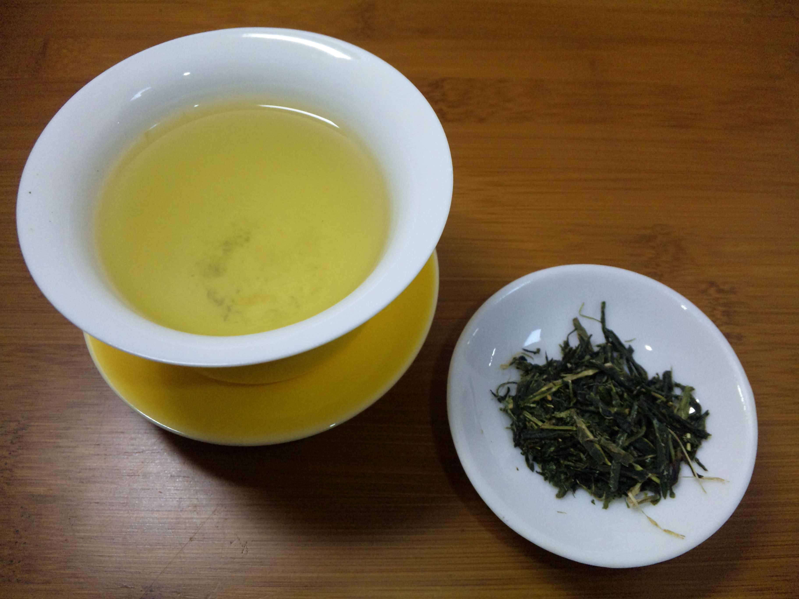
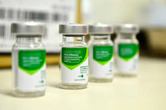

Iniciaremos o módulo definindo e diferenciando dois termos que frequentemente geram muitas dúvidas e eventualmente são tratados como sinônimos. Trata-se de remédio e medicamento. Vamos conceituá-los?
 Remédio é todo e qualquer tipo de cuidado utilizado para curar doenças ou aliviar sintomas, desconforto e mal-estar. Por exemplo, uma massagem para diminuir as tensões, um chá caseiro, hábitos alimentares saudáveis e atividades físicas para evitar o desenvolvimento de doenças crônicas não transmissíveis (BRASIL, 2010a).
Remédio é todo e qualquer tipo de cuidado utilizado para curar doenças ou aliviar sintomas, desconforto e mal-estar. Por exemplo, uma massagem para diminuir as tensões, um chá caseiro, hábitos alimentares saudáveis e atividades físicas para evitar o desenvolvimento de doenças crônicas não transmissíveis (BRASIL, 2010a).
- Medicamento é o produto farmacêutico, tecnicamente obtido ou elaborado, com finalidade profilática, curativa, paliativa ou para fins de diagnóstico (BRASIL, 2010b). Para maiores informações consulte a RDC n°17, de 21 de setembro de 2010.
Portanto, a partir desta definição os medicamentos podem ser:
-
profiláticos, ou seja, ajudam a evitar doenças, tal como os soros, as vacinas, os complementos vitamínicos e os antissépticos;
-
curativos, ou seja, eliminando a causa ou corrigindo uma função corporal deficiente, tal como os antibióticos, os antivirais e os antiparasitários;
-
paliativos, ou seja, aliviando sintomas como dor, febre, vômito e ansiedade (estes medicamentos apenas eliminam os sintomas, o que não significa que as causas da doença tenham sido eliminadas), tal como os antiinflamatórios e os ansiolíticos ou calmantes;
-
utilizados para diagnosticar doenças, como por exemplo, os contrastes radiológicos (renal, hepático, digestivo) e os meios auxiliares para o diagnóstico oftálmico.
Os medicamentos são capazes de promover resultados biológicos e/ou farmacológicos observados durante a utilização no ser humano, caracterizando a sua eficácia.
Os medicamentos devem ser preferencialmente isentos de efeitos colaterais, adversos e tóxicos, de modo a não causar riscos ao usuário. Para assegurar a eficácia e a segurança são realizados os ensaios pré-clínicos e clínicos. Vocês verão mais detalhes destes ensaios no módulo 4.
 O reino vegetal é responsável pela maior parcela da diversidade química conhecida e registrada na literatura. Estima-se que 40% dos medicamentos têm sua origem na biodiversidade destes 25% são originários de espécies vegetais, 13% de microrganismos e 3% de espécies animais (INTERFARMA, 2016)
O reino vegetal é responsável pela maior parcela da diversidade química conhecida e registrada na literatura. Estima-se que 40% dos medicamentos têm sua origem na biodiversidade destes 25% são originários de espécies vegetais, 13% de microrganismos e 3% de espécies animais (INTERFARMA, 2016)
Para ilustrar bem a distinção entre estes dois conceitos vamos tomar como exemplos as imagens abaixo. Da esquerda para direita você está vendo um chá, uma massagem e uma ampola contendo uma vacina. Podemos considerar as 3 como remédio? Sim! Entretanto, apenas a vacina pode ser considerada um medicamento pois segue determinações de segurança e eficácia. Todo medicamento é remédio, mas nem todo remédio é medicamento. Enquanto o medicamento é uma preparação elaborada em farmácias ou indústrias, que têm a obrigação de seguir determinações de segurança e eficácia, o remédio não atende a nenhum tipo de exigência do Ministério da Saúde.
 
Qualquer efeito não intencional de um produto farmacêutico que ocorra em doses normalmente utilizadas em humanos relacionado com as propriedades farmacológicas do fármaco.
{kind=link}
{kind=link}